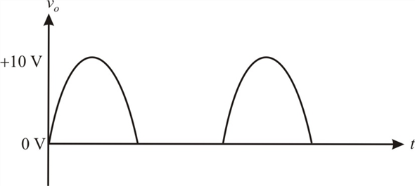

Step 1:
Refer to Figure 17.33 in the text book for the super diode precision half-wave rectifier circuit.
Modify the circuit to have some gain by connecting a resistor in place of the short circuit between the cathode of the diode and the negative input terminal of the op amp, and a resistor  between the negative input terminal and the ground.
between the negative input terminal and the ground.
Figure 1
Step 2:
For , that is, for the positive sine voltages, the diode  conducts because the
conducts because the
op-amp output reaches positive saturation level. Draw the circuit.
Figure 2
Step 3:
The circuit acts as a non-inverting amplifier.
The output of the circuit is,
The gain of the circuit is,
The output voltage is,
Equate the gain to 2.
Assume,
Step 4:
Therefore, the output for  is,
is,
For  peak to peak sine voltage, the positive peak voltage is
peak to peak sine voltage, the positive peak voltage is
Therefore, the output positive peak for is,
Step 5:
For , that is, for the negative sine input, the diode is cutoff because the op-amp output is reaching the negative saturation level. Draw the circuit.
Figure 3
From the circuit, observe that the output is zero
Step 6:
Therefore, the output for is,
Draw the output waveform.

Figure 4
Step 7:
Determine the average output voltage.
Thus, the average output voltage is .